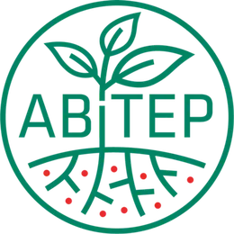

Amplio Espectro
Control efectivo de patógenos como Fusarium , Rhizoctonia , Phomopsis y Macrophomina .
FUNGICIDA BIOLÓGICO PARA TRATAMIENTO DE SEMILLAS
Amyprotec 42 protege la semilla desde el inicio, creando una barrera biológica contra patógenos clave del suelo y garantizando una viabilidad celular sin precedentes en el mercado.

Amyprotec 42 es la base para un cultivo exitoso, asegurando la sanidad en la etapa más crítica y potenciando el desarrollo inicial.
Control efectivo de patógenos como Fusarium , Rhizoctonia , Phomopsis y Macrophomina .
Único biológico que mantiene su eficacia sobre la semilla hasta 300 días post-tratamiento .
Promueve el desarrollo radicular y la absorción de nutrientes desde el momento de la germinación.
Un establecimiento uniforme y vigoroso se traduce directamente en un mayor potencial de rendimiento final.
Amyprotec 42 combina la potencia genética de la cepa FZB42 con una formulación avanzada de endosporas . Este estado de latencia garantiza una resistencia superior a factores ambientales y químicos, activándose únicamente al detectar los exudados de la raíz para una colonización inmediata.
La cepa FZB42 fue la primera bacteria promotora del crecimiento con su genoma completamente secuenciado.
Su eficacia y seguridad están respaldadas por una vasta literatura científica internacional.
Produce el doble de compuestos antibióticos que cepas estándar de B. subtilis .
FLEXIBILIDAD LOGÍSTICA TOTAL
Amyprotec 42 está formulado como una Suspensión Concentrada (SC) de endosporas altamente resistentes. Su estabilidad química y biológica permite tratar las semillas hasta 300 días antes de la siembra sin ninguna pérdida de eficacia.

Respaldo

Nuestro equipo técnico-comercial te asesora sin cargo para integrarlo a tu programa de manejo.
También te puede interesar
Solubilizador biológico de fósforo con Bacillus velezensis FZB45 para potenciar rendimiento y calidad.
Ver ficha técnica →Bioestimulante radicular con L-triptófano, L-metionina y Ecklonia maxima para potenciar arranque y vigor.
Ver ficha técnica →